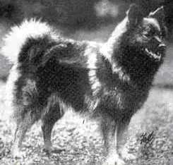
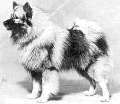
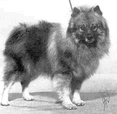
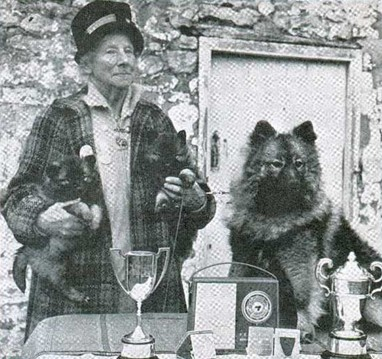
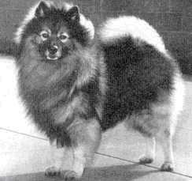
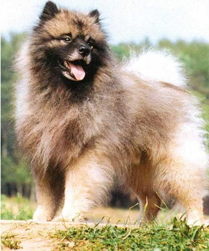

История появления в Европе кеесхондов, так же, как и шпицев, доподлинно не известна. Крепкий тип конституции, богатый подшерсток и густая шерсть, достаточно высокий уровень социализации и интеллекта шпицеобразных, в частности кеесхонда, предполагают самые различные условия становления породы. Так или иначе, собаки, по типу напоминающие шпица, в Европе появились очень давно. В XVI-XVII веках в разных районах Европы разводили шпицев разных окрасов и размеров. Черные и коричневые шпицы сторожили виноградники в Вюртемберге, большие белые были распространены в Померании и других провинциях, а маленькие шпицы стали домашними любимцами. Большие, волчьего окраса, шпицы охраняли дома и лодки рыбаков. В Голландии их называли кеесхондами, в Германии - по окрасу - вольф шпицами. 
Предки кеесхонда не обладали импозантной внешностью, характерной для собак аристократии: бладхаундов, мопсов, борзых, не отличались ростом или силой мастифов, сенбернаров или какой-то особенностью поведения: быстрым бегом борзой, мертвой хваткой бульдога. Они оставались и остаются по сей день где-то в стороне от амбициозных интересов большинства кинологов-профессионалов и любителей. На них не обращали внимания ни устроители собачьих боев, ни мясники Ротвайля, ни налоговый инспектор Л. Доберман. Им не строили каменных псарен, их не лечили светила медицины, не обменивали на дорогое оружие и рабов и не дарили венценосным особам. Они на протяжении веков жили рядом с домом человека, выполняя самые необходимые обязанности сторожа и пастушьей собаки. Средние размеры и присуще породе поведенческие качества позволили кеесхондам стать “собакой на все случаи жизни”. Рачительные хозяева не могли содержать собаку с плохим поведением или не способную выполнять работу. Это помогло сохранить породе отменное здоровье, способность адаптироваться к самым различным условиям содержания, высокий уровень обучаемости. Кеесхондам и шпицам присущи такие качества, как стремление понять человека, угадать желаемое поведение, сторожкость и преданность, стремление всегда быть рядом и одновременно оставаться не на виду, что так редко встречается в рядах собачьей аристократии. Вероятно, именно благодаря этим чертам характера шпицы пережили столетия, оставаясь рядом с человеком. 
Демократически настроенные патриоты Голландии в 1781 году восстали против Вильгельма Оранского. Корнелиус де Гизеляр из Дордрехта был предводителем восставших патриотов. Он повсюду появлялся в сопровождении шпица, изображение которого стало эмблемой Датской партии патриотов. Сторонники Оранского называли восставших “гезами” - безродными, бродягами, оборванцами. Гезом, а может быть, Кесом или Кисом звали и собаку Корнелиуса. После подавления восстания патриотов гезхунды, собаки, похожие на шпица Гизеляра и ставшие символом революции, уничтожались победителями, пытавшимися всеми силами стереть память о днях поражений и позора. Однако то ли карателям надоело в кон-концов вылавливать собак в подворотнях и на причалах, то ли собаки оказались слишком шустрыми и сообразительными, но так или иначе полностью истребить их не удалось, и собаки простолюдинов продолжали нести свою службу, Они сторожили стада и дома голландских фермеров, баржи рыбаков и пользовались всенародной любовью. И через сто лет эти собаки оставались очень популярными среди населения.
В 1899 году немецкие заводчики объединились в Немецкий шпиц- клуб. Были приняты стандарты пород, в том числе и немецкого вольф- шпица, утверждены правила разведения.
Несколькими годами раньше, в 1891 году, баронесса Ван Харденброук впервые показала на выставке в Амстердаме голландских шпицев. Их назвали датскими баржевыми собаками, или кеесхондами, - то ли в память о гезах, то ли оттого, что они умеют становиться незаметными, спрятавшись на судне в какой-нибудь будь ящик (от английского case - кейс). Возможно, название кеесхонд произошло от голландского kaas - сыр и hond - собака, потому что и до сих пор голландские кеесхонды пасут коров. Баронесса Ван Харденброук категорически возражала против попыток немецких собаководов называть этих собак немецкими шпица-ми. В течение ряда лет разведением кеесхондов занимались многие собаководы Голландии. Но три десятилетия спустя пальму первенства в селекции “улыбающихся голландцев”, как окрестили кеесхондов собаководы, перехватила Англия. 
Англичанка В. Дигби, основательница разведения этих собак в Великобритании, по праву может носить титул Первой Леди Королевства Кеесхондов. Впервые увидев их еще девочкой во время поездки в Голландию, она сразу и навсегда отдала свое сердце датской баржевой собаке. Исходным материалом для ее известного всем любителям кеесхондовпитомника Ван Заандам стали собаки из Голландии и, в меньшей степени, из Германии. В 1907 году она вывезла из Голландии первую пару кеесхондов, Наверное, с этого момента и можно начинать отсчет новой истории породы. В 1925 году на Британских островах был создан клуб, занимающийся разведением датской баржевой собаки. Президентом клуба стала миссис Дигби. В то время в Великобритании официально было зарегистрировано всего 25 пород собак. Тот факт, что одной из зарегистрированных пород был кеесхонд, можетсвидетельствовать, что это была популярная собака с достаточно устойчивым генотипом и выразительными экстерьером и характером. В 1926 году датские баржевые собаки были переименованы в кеесхондов, и с тех пор кеннел-клубы Англии, Америки, Скандинавских стран, Австралии, Новой Зеландии, ЮАР регистрируютруют этих собак только под таким названием. От собак питомника Ван Заандам ведут свое происхождение практически все современные кеесхонды. Наверное, у каждой породы собак есть свой ангел-хранитель. Для кеесхондов им стала В. Дигби, эта удивительная женщина, больше шестидесятишестидесяти лет своей жизни отдавшая созданию и совершенствованию любимой породы. 
Шведские кеесхонды ведут свое происхождение от английских, голландских и датских собак. Вначале эта порода была известна в Швеции как датский чау-чау. Спустя двадцать лет, в начале семидесятых годов, популярность кеесхондов достигла пика, и с тех пор число членов клуба сохраняется на достаточно высоком уровне. Шведские кеесхонды обладают удивительно богатой шерстью и красивыми типичными головами. В начале шестидесятых годов пара шведских кеесхондов была импортирована в Финляндию. В 1965 году был создан финский Кеесхонд-клуб. Племенное ядро составили шведские и английские собаки. В восьмидесятых годах были импортированы американские производители. Как и шведские собаки, финские кеесхонды прекрасно одеты и обладают чудесным характером. А в Норвегии кеесхондов ждала поистине королевская судьба. В этой стране существуют достаточно жесткие законы, ограничивающие разведение собак. Однако в 1970 году король Олаф получил в подарок от своих детей щенка кеесхонда. Подросший пес сопровождал короля в лыжных прогулках и даже был изображен на картине “Король и его собака”.
Первый кеесхонд в Американском кеннел-клубе был зарегистрирован в 1930 году. И с тех пор популярность этих собак постоянно растет. Во всех 50 штатах Америки зарегистрированы питомники. Первый питомник был основан Виргинией Ратткей в 1946 году. Основой для этого питомника послужили английские собаки. Позже были импортированы производители из Дании и Германии. Американские селекционеры достигли в своей работе удивительных результатов. На многочисленных региональных специализированных выставках питомники показывают своих поистине замечательных собак. Ведущие заводчики серьезно относятся к разведению и усовершенствованию породы. Американский кеесхонд - очень красивая собака с прекрасным дружелюбным характером, обладающая хорошим здоровьем. Видимо, именно поэтому в последнее время увеличился экспорт американских собак в Европу. 
Немецкий вольф-шпиц и кеесхонд, по-видимому, имеют общее происхождение, но их разведение шло по несколько самостоятельным направлениям. Если кеесхондов стали содержать как собаку-компаньона, собаку-спутника, то вольф-шпицы, как и сто лет назад, зачастую сидели на привязи, охраняя хозяйское добро. Это не могло не сказаться на внешности и характере собак. Немецкие шпицы намного крупнее, активнее и, до некоторой степени, агрессивнее типичных кеесхондов. Увеличение размеров, как правило, ухудшало декоративные качества собаки. Вольф-шпицы в массе своей выглядят намного проще, чем кеесхонды. Международная кинологическая федерация (FCI) не признает кеесхондов как отдельную породу, и на всех выставках обе разновидности сравниваются в одном ринге. В такой ситуации победа в большинстве случаев достается кеесхондам. Поэтому многие немецкие заводчики поставили своей целью изменить первоначальный тип немецкого шпица. И если раньше в качестве нового племенного материала использовали ли производителей из Голландии, то в последнее время в Германию завезены несколько собак из США. Результат такой работы не замедлил сказаться, Вот уже в течение ряда лет лучшим питомником признан “Альтен Ниершталь” Барбары Штайнхильбер, которая активно использует в качестве производителей потомков американских и канадских чемпионов. Возможно, под влиянием ем новых требований 5 марта 1998 года FCI приняла новую редакцию стандарта этой породы, которая теперь называется вольф-шпиц/кес- хонд, а также внесены изменения по высоте собак. Если раньше рост вольф-шпица мог достигать и 60 см, то теперь он ограничен пределами 43-55 см (для кеесхондов идеальный размер 43-46 см).
По непроверенным данным, в начале восьмидесятых годов несколько кеесхондов работали в советских цирках. Однако они не использовались в разведении и не оставили известных потомков. Примерно в тот же период в Москву из Польши была привезена Чика Злоты Шпиц - немецкий вольф- шпиц. Практически все известные сегодня в России собаки этой породы - ее потомки. К сожалению, все они получены в результате теснейшего инбридинга, поэтому в потомстве наряду с положительными качествами проявились все недостатки и пороки, присущие собакам этой линии. И только благодаря усилиям та-ких заводчиков, как Т. Цалиева, в нынешнем поголовье вольф-шпицев можно найти несколько очень неплохих собак. В России первые племенные кеесхонды появились в 1993 году. Пара собак этой породы - кобель чемпион Американского кеннел - клуба W’ldwood Spirit ‘N the Night (Эндрю) и сука Bonnyvale N С Southern Jewel (Нэнни) - были привезены А.Телицыной. Нэнни стала родоначальницей питомника Сашанна’с. В трех пометах от нее были получены великолепные потомки - чемпионы России, обладатели титулов САС1В, Она не дала ни одного щенка с оценкой ниже “отлично”!
Профессиональный подход к селекционной работе А.Телицыной позволил ей выбрать и приобрести прекрасную суку и подобрать кобелей для вязки с нею. Три привезенных ею из США собаки выставлялись на самых престижных выставках и завоевали высокие титулы. Полученные от них потомки в ряде случаев оцениваются выше своих родителей-чемпионов. Эксперты, оценивающие наших собак на выставках, единодушны в оценках: они подчеркивают очень высокое качество кеесхондов, которые рождены уже в России.
По материалам статьи Крутовой В.И. (питомник "
Журнал "Друг", № 7-8 (70), 1999 г.
{kind=link}
{kind=link}
{kind=link}
{kind=link}
{kind=link}
{kind=link}